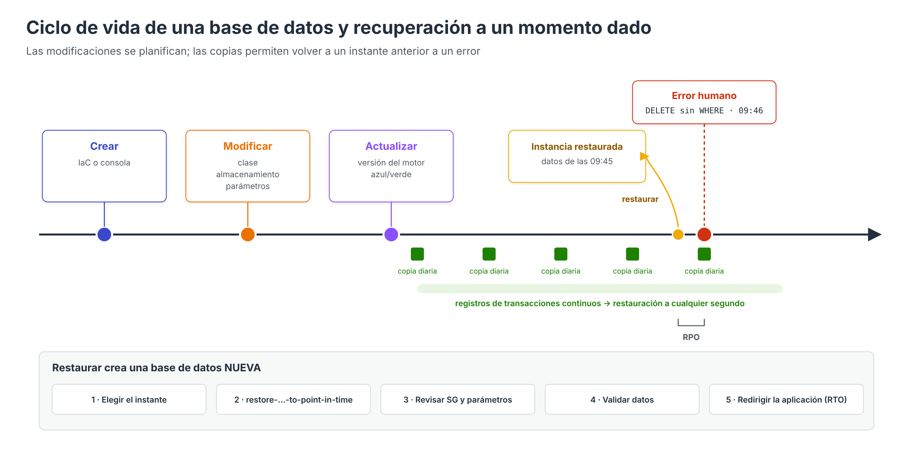

Ciclo de vida: modificaciones, copias y recuperación¶

Una base de datos no se configura una única vez. A lo largo de su vida es necesario ampliar su capacidad, ajustar su configuración, actualizar el motor y, llegado el caso, recuperar los datos tras un error. Este apartado describe cómo se realizan estos cambios en RDS, Aurora y DynamoDB, qué impacto tienen sobre el servicio y cómo planificar las copias de seguridad para poder recuperar la información en el tiempo y la forma que exige la organización.
1. Modificación de una instancia RDS¶
Casi todos los parámetros elegidos al crear una instancia pueden modificarse después desde Modificar en la consola, con aws rds modify-db-instance o actualizando la plantilla de IaC.
Aplicar inmediatamente o en la ventana de mantenimiento¶
Al modificar una instancia se elige cuándo aplicar el cambio:
| Opción | Comportamiento | Cuándo usarla |
|---|---|---|
| Aplicar durante la próxima ventana de mantenimiento (predeterminada) | El cambio queda pendiente y se aplica en la ventana semanal configurada | Cambios que provocan interrupción en producción |
Aplicar inmediatamente (--apply-immediately) |
El cambio comienza al momento, junto con cualquier otro cambio pendiente | Urgencias o entornos sin usuarios |
Los cambios pendientes pueden consultarse en la pestaña Mantenimiento y copias de seguridad o con:
aws rds describe-db-instances --db-instance-identifier tienda-db-server \
--query "DBInstances[0].PendingModifiedValues"
Impacto de los cambios más habituales¶
| Cambio | ¿Interrupción? | Observaciones |
|---|---|---|
| Clase de instancia (cómputo y memoria) | Sí | Single-AZ: reinicio de varios minutos. Multi-AZ: se modifica primero la standby y se conmuta; la interrupción se reduce a la conmutación |
| Ampliar el almacenamiento | No | La instancia entra en estado storage-optimization. No se puede reducir el almacenamiento asignado |
| Tipo de almacenamiento, IOPS o rendimiento (gp3, io2) | Normalmente no | Igual que la ampliación, con optimización posterior |
| Activar Multi-AZ | No | Se crea la standby a partir de una instantánea; puede afectar al rendimiento durante el proceso |
| Periodo de retención de copias | No (salvo pasar de 0 a un valor positivo o viceversa) | Pasar a 0 desactiva las copias automáticas y elimina las existentes |
| Grupo de seguridad, etiquetas, protección contra eliminación | No | Efecto inmediato |
| Cambiar el grupo de parámetros | Requiere reinicio | La instancia queda en estado pending-reboot |
| Actualizar versión secundaria del motor | Sí (breve) | Puede ser automática en la ventana de mantenimiento |
| Actualizar versión principal | Sí | Manual; recomendable con implementaciones azul/verde |
Restricciones del almacenamiento¶
- El almacenamiento asignado solo puede aumentarse. Para reducirlo hay que crear una instancia nueva y migrar los datos.
- Tras una modificación del almacenamiento, no puede realizarse otra hasta que finalice la optimización y hayan transcurrido al menos seis horas.
-
El autoescalado del almacenamiento (Storage autoscaling), activado indicando un umbral máximo de almacenamiento, amplía el volumen automáticamente cuando:
- el espacio libre es igual o inferior al 10 % del asignado,
- la situación se mantiene al menos 5 minutos, y
- no se han producido más de cuatro modificaciones en las últimas 24 horas.
El incremento es el mayor entre 10 GiB, el 10 % del almacenamiento asignado o el crecimiento previsto para las siguientes horas.
Parámetros estáticos y dinámicos¶
Los parámetros del motor se modifican en un grupo de parámetros personalizado (el grupo predeterminado no admite cambios):
| Tipo | Ejemplo (MySQL) | Aplicación |
|---|---|---|
| Dinámico | long_query_time, max_connections, slow_query_log |
Inmediata, sin reinicio |
| Estático | innodb_log_file_size, performance_schema |
En el siguiente reinicio |
aws rds create-db-parameter-group --db-parameter-group-name tienda-mysql84 \
--db-parameter-group-family mysql8.4 --description "Parametros de la tienda"
aws rds modify-db-parameter-group --db-parameter-group-name tienda-mysql84 \
--parameters "ParameterName=long_query_time,ParameterValue=1,ApplyMethod=immediate"
aws rds modify-db-instance --db-instance-identifier tienda-db-server \
--db-parameter-group-name tienda-mysql84 --apply-immediately
aws rds reboot-db-instance --db-instance-identifier tienda-db-server # para aplicar la asociación
Actualizaciones del motor¶
- Versiones secundarias (por ejemplo, 8.4.5 → 8.4.6): incluyen correcciones de errores y seguridad. Con la opción Actualización automática de versiones secundarias se aplican en la ventana de mantenimiento.
- Versiones principales (por ejemplo, MySQL 8.0 → 8.4): pueden incluir cambios incompatibles. Se recomienda:
- Probar la aplicación en una copia (restauración de instantánea o clon de Aurora).
- Usar una implementación azul/verde: RDS crea un entorno verde sincronizado mediante replicación, se actualiza y se prueba, y la conmutación se realiza normalmente en menos de un minuto, con posibilidad de volver atrás antes de conmutar.
- Las versiones que alcanzan su fin de soporte estándar pasan a RDS Extended Support, con coste adicional, o se actualizan automáticamente.
Detener e iniciar¶
Una instancia RDS puede detenerse para ahorrar el coste de cómputo (el almacenamiento y las copias se siguen facturando). AWS la vuelve a iniciar automáticamente a los 7 días para aplicar el mantenimiento pendiente. Es útil en entornos de desarrollo y en los laboratorios.
2. Modificaciones en Aurora¶
| Cambio | Cómo se realiza |
|---|---|
| Escalar las lecturas | Añadir o eliminar réplicas de Aurora; no copian datos y están disponibles en minutos |
| Cambiar la clase de la instancia de escritura | Cambiar primero la clase de una réplica y conmutar (failover-db-cluster) hacia ella para minimizar la interrupción |
| Ajustar Aurora Serverless | Modificar la capacidad mínima y máxima en ACU; se aplica sin interrupción |
| Almacenamiento | No se gestiona: crece y decrece automáticamente |
| Probar cambios | Crear un clon del clúster en minutos y aplicar en él el cambio |
| Pasar a I/O-Optimized | Cambio de configuración del clúster, sin interrupción en la mayoría de instancias |
3. Modificaciones en DynamoDB¶
| Cambio | Observaciones |
|---|---|
| Cambiar el modo de capacidad | De aprovisionado a bajo demanda hasta 4 veces cada 24 horas; a la inversa, en cualquier momento |
| Ajustar RCU/WCU o el autoescalado | Sin interrupción; las reducciones tienen un límite diario |
| Fijar el rendimiento máximo bajo demanda | Sin interrupción |
| Añadir un GSI | Se crea en línea: DynamoDB rellena el índice (backfilling) sin bloquear la tabla |
| Cambiar la clase de tabla (Standard ↔ Standard-IA) | Sin interrupción; con un límite de cambios en un periodo de tiempo |
| Activar TTL, Streams, PITR o la protección contra eliminación | Sin interrupción |
| Cambiar la clave primaria o añadir un LSI | No es posible: requiere crear una tabla nueva y migrar los datos |
4. Copias de seguridad y recuperación¶
Objetivos de recuperación¶
Antes de configurar las copias, la organización debe fijar dos objetivos para cada sistema:
| Objetivo | Pregunta | Ejemplo |
|---|---|---|
| RPO (Recovery Point Objective) | ¿Cuántos datos podemos permitirnos perder? | «Como máximo, los últimos 5 minutos» |
| RTO (Recovery Time Objective) | ¿Cuánto tiempo podemos estar sin servicio? | «Como máximo, 1 hora» |
Estos objetivos determinan qué mecanismos son necesarios:
| Mecanismo | RPO típico | RTO típico | Protege frente a |
|---|---|---|---|
| Multi-AZ | 0 | 1–2 minutos | Fallo de una instancia o una zona |
| Aurora (réplicas) | 0 | < 30 segundos | Fallo de una instancia o una zona |
| Restauración a un momento dado (PITR) | ≈ 5 minutos | Minutos a horas (según el tamaño) | Errores humanos, corrupción lógica |
| Instantánea manual | Desde la última instantánea | Minutos a horas | Errores, cambios arriesgados |
| Copia en otra región | Desde la última copia | Horas | Desastre regional |
| Réplica entre regiones / Global Database | Segundos | Minutos | Desastre regional |
La alta disponibilidad no es una copia de seguridad
Multi-AZ y las réplicas replican también los errores: un DELETE sin WHERE se propaga a la standby en milisegundos. Solo las copias de seguridad y la restauración a un momento dado protegen frente a errores humanos.
Tipos de copia en RDS y Aurora¶
| Tipo | Creación | Retención | Observaciones |
|---|---|---|---|
| Copias automáticas | Diarias en la ventana de copia + registros de transacciones | 1 a 35 días (0 las desactiva) | Permiten la restauración a un momento dado; se eliminan al borrar la instancia, salvo que se indique conservarlas |
| Instantáneas manuales | Bajo demanda (create-db-snapshot) |
Hasta que se eliminan | Sobreviven a la eliminación de la instancia; pueden copiarse a otra región o compartirse con otra cuenta |
| Instantánea final | Al eliminar la instancia | Hasta que se elimina | Se recomienda crearla siempre |
| AWS Backup | Según un plan de copias | Según las reglas del plan | Centraliza la política de copias de varios servicios y cuentas |
| Exportación de instantáneas a S3 | Bajo demanda | Según S3 | Formato Parquet para análisis, no para restaurar |
Restaurar no sobrescribe: crea una base de datos nueva¶
Cualquier restauración en RDS, Aurora o DynamoDB crea un recurso nuevo con otro identificador y otro punto de enlace. La base de datos original no se modifica. El procedimiento habitual es:
- Identificar el momento al que se quiere volver (por ejemplo, el instante anterior al borrado erróneo) y comprobar el último momento restaurable.
-
Restaurar en una instancia nueva:
-
Revisar la configuración de la instancia restaurada: grupo de seguridad, grupo de parámetros, opciones de supervisión y etiquetas, que no siempre se heredan.
- Validar los datos restaurados.
- Redirigir la aplicación: cambiar el punto de enlace en la configuración, o bien renombrar la instancia original y asignar su identificador a la restaurada para conservar el mismo nombre DNS.
- Eliminar la instancia que ya no se necesite, tras crear una instantánea final.
En ocasiones no es necesario sustituir la base de datos completa: basta con restaurarla aparte y copiar solo las filas perdidas a la base de datos de producción.
Copias en DynamoDB¶
- PITR: restauración a cualquier segundo del periodo configurado (1 a 35 días) en una tabla nueva.
- Copias bajo demanda y AWS Backup.
- Al restaurar no se recuperan algunos ajustes, como las políticas de autoescalado, las alarmas de CloudWatch, las etiquetas, la configuración de Streams o el TTL, que deben volver a configurarse.
aws dynamodb restore-table-to-point-in-time \
--source-table-name Productos \
--target-table-name Productos-restaurada \
--restore-date-time 2026-11-10T09:45:00Z
Planes de AWS Backup¶
Un plan de copias de AWS Backup define de forma centralizada:
- Frecuencia (cada hora, diaria, semanal…) y ventana de ejecución.
- Retención y, en su caso, transición a almacenamiento en frío.
- Copias automáticas a otra región o a otra cuenta, como protección frente a desastres o frente al compromiso de la cuenta principal.
- Asignación de recursos por etiquetas: por ejemplo, todas las bases de datos con
copia = diaria. - Almacenes bloqueados (Vault Lock), que impiden eliminar las copias antes de tiempo incluso a los administradores.
Probar la recuperación¶
Una copia que nunca se ha restaurado no garantiza que se pueda recuperar. Las organizaciones deben ensayar periódicamente la restauración y medir el tiempo real empleado, para comprobar que se cumple el RTO. AWS Backup incluye la funcionalidad de pruebas de restauración (restore testing), que automatiza estas comprobaciones.
Referencias¶
- AWS. Modifying an Amazon RDS DB instance — Modificación de instancias
- AWS. Settings for DB instances (impacto de cada cambio) — Ajustes y tiempo de inactividad
- AWS. Increasing DB instance storage capacity — Ampliación del almacenamiento
- AWS. Managing capacity automatically with Amazon RDS storage autoscaling — Autoescalado del almacenamiento
- AWS. Working with parameter groups — Grupos de parámetros
- AWS. Upgrading a DB instance engine version — Actualizaciones del motor
- AWS. Using Amazon RDS Blue/Green Deployments for database updates — Implementaciones azul/verde
- AWS. Stopping an Amazon RDS DB instance temporarily — Detener una instancia
- AWS. Backing up, restoring, and exporting data — Copias de seguridad en RDS
- AWS. Restoring a DB instance to a specified time — Restauración a un momento dado
- AWS. Backup and restore for DynamoDB — Copias en DynamoDB
- AWS. What is AWS Backup? — AWS Backup
- AWS. Restore testing — Pruebas de restauración
- AWS. Disaster recovery of workloads on AWS (whitepaper: RPO y RTO) — Recuperación ante desastres